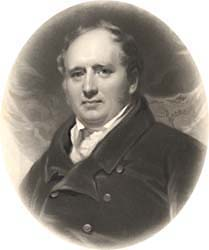
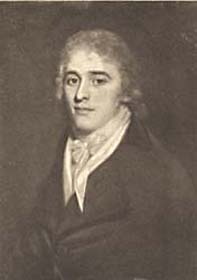
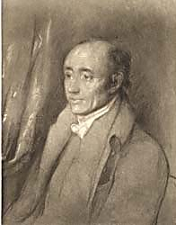
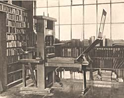
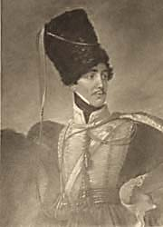

|
|
||||||||||||
|
|
Home | Corson Collection | Biography | Works | Image Collection | Recent Publications | Portraits | Correspondence | Forthcoming Events | Links | E-Texts | Contact The Ballantyne Brothers
In 1799, James privately printed the two pamphlets with which Scott began his writing career: An Apology for Tales of Terror (containing ballads and translations intended for publication in Matthew Gregory Lewis's much-delayed anthology Tales of Wonder) and the ballad 'The Eve of St. John' (see Literary Beginnings). Thus began a literary and business partnership that would last Scott's lifetime. Scott was so pleased with the typographical excellence of these two slim volumes that he offered James the opportunity of printing the collection of Border ballads that he was in the process of gathering. When these eventually appeared as the two large octavo volumes of Minstrelsy of the Scottish Border (1802), there was general astonishment in the British book-trade that a small-town printer could produce work of such quality. Scott immediately urged his friend to relocate to Edinburgh, but James wished first to train up the younger of his two brothers, Alexander ('Sandy'), to take over the running of the Kelso Mail. Sandy, father of the Victorian children's writer, R.M. Ballantyne, would eventually buy James's entire interest in the Kelso Mail in 1806.
Scott finally persuaded James to move to Edinburgh in 1803, loaning him £500 to increase the liquid capital of his business. James initially set up his presses in two small rooms in Holyrood House, but thriving business soon led him to seek larger premises. Orders flooded in from Edinburgh publishers and Scott was instrumental in securing for Ballantyne the right to print Session papers (see Professional Life). James first moved to Foulis Close in the Canongate then, in 1805, to Paul's Work, situated between the Canongate and Leith Wynd.
In that same year, though, the unprecedented success of The Lay of the Last Minstrel, printed by Ballantyne for Archibald Constable, severely strained the small firm's financial resources. Printing jobs for other publishers were delayed for want of capital to purchase materials (paper, inks, type-faces, extra presses). Customers habitually demanded generous credit before placing orders so money was slow coming in. However prosperous the business appeared, Ballantyne sometimes lacked the ready funds to pay his employees' wages. He thus requested a further loan from Scott. Scott had recently been left £5,000 on the death of his uncle, Robert Scott, and grasped the opportunity to obtain a share in a business with excellent long-term prospects. He offered to inject further capital on condition of being made a partner. An agreement was signed on May 26, 1805, whereby Scott advanced a further £1,500 (his original £500 loan being converted into share capital) and became owner of a third of the company's stock. The arrangement was kept a close secret from all but Scott's friend Will Erskine. With the aid of Scott's capital the press continued to prosper. Scott threw himself into a great deal of editorial work on scholarly and antiquarian volumes which he insisted must be printed by James Ballantyne and Co. Scott's achievements as an editor are perhaps the most overlooked aspect of his literary career. Most significant in these years was the eighteen-volume set of the works of John Dryden (portrayed, left) who many critics have seen as Scott's role model as a professional writer. Other works edited or part-edited by Scott include Memoirs of Captain George Carleton, Memoirs of Robert Carey, State Papers and Letters of Sir Ralph Sadler, and Joseph Strutt's Queenhoo-Hall (see Scott the Novelist). These all brought considerable profits to Ballantyne and Co. (and, by extension to Scott himself) but little for the publishers involved. The press's greatest success in these years, however, was Scott's second narrative poem Marmion (1808) which proved even more popular than The Lay of the Last Minstrel. Marmion was printed by Ballantyne for the publisher Archibald Constable (portrayed, right) but Scott was now keen to distance himself from Constable. He detested the Whig politics of Constable's Edinburgh Review and had been particularly incensed by Francis Jeffrey's condemnation of British intervention in the Peninsular War which had appeared on its pages. He had also been hurt by Jeffrey's high-handed critique of Marmion. Keen to partake of the huge profits with which he was currently lining Constable's pockets, Scott decided to set up a rival publishing house. Looking around for a capable manager, his choice fell on the middle Ballantyne brother, John. On the face of it, John Ballantyne (1774-1821), with his hard-won reputation as the black sheep of the family, was a perverse choice. After serving an apprenticeship at a London banking house, he had been taken on as a partner in his father's business in Kelso. In 1797, however, the two men quarreled bitterly over John's choice of bride, and John set up a rival store. Although it initially prospered, mismanagement, womanizing and all-round high living brought John near ruin by 1806. With difficulty, James dissuaded him from emigrating to the West Indies and offered him a clerical post in his printing office, provided that he mend his ways and make up with his now estranged wife. In this new capacity John impressed Scott with his inventive approach to book-keeping. Rapidly tiring of office drudgery, he leapt at the chance to head the publishing firm which was founded in 1809. Based in Hanover Street, it would trade under the name of John Ballantyne and Co. Scott acquired a half-share in the business (again a closely guarded secret), and James and John were allotted a quarter share each. Profits were to be divided in the same proportion and matters of policy to be decided jointly. Later in 1809 Scott renegotiated his position with James Ballantyne's printing company, obtaining a half-share in the business through a new injection of capital. John Ballantyne and Co.'s first publication, Scott's The Lady of the Lake appeared in 1810. The huge profits led the three partners into a wildly optimistic estimate of their future prospects. The selection of future titles for publication fell to Scott himself, who launched a series of commercially disastrous titles. Profits from The Lady of the Lake were not ploughed back into the business, and debts mounted rapidly. It was at this juncture that Scott decided to throw further capital into the purchase of Cartley Hole Farm, soon to be renamed Abbotsford. Half of this sum was raised by John Ballantyne on the security of the as yet unwritten Rokeby, the poem to which Scott was looking both to cover his building expenses and to bale out the publishing house. By spring 1813, a series of banking crises had brought the war-ravaged economy to a crisis. John Ballantyne and Co. had been forced to sell some of the copyrights of Scott's works (their most valuable assets) to raise ready capital. Rokeby, although a great success by any other poet's standards, fell far short of being the panacea to all the company's ills. The Ballantynes reluctantly approached Archibald Constable who offered £1,300 for part of their unsold stock, on condition that the firm wind up immediately and Scott allow him to purchase a quarter share of the copyright of Rokeby for an extra £700. Constable also agreed to prepare a report into the financial state of both the printing and publishing companies, concluding that they must raise £4,000 immediately to avoid bankruptcy. Bankruptcy would have made public the secret arrangement whereby Scott profited from the printing, publishing, and royalties of every book he wrote. He would have been forced to resign as Clerk to the Court of Session and thus lose his regular income. In desperation, Scott turned to his patron, the Duke of Buccleuch (portrayed, above right), who agreed to stand guarantor behind a redeemable annuity for a sum of £4,000 (see Financial Hardship). Constable was to publish Scott next narrative poem The Lord of the Isles and the first three Waverley Novels (Waverley, Guy Mannering, and The Antiquary). After publishing the First Series of Tales of My Landlord (The Black Dwarf and Old Mortality) with William Blackwood, Scott returned to Constable for Rob Roy (1817), eventually persuading him to buy all of John Ballantyne and Co.'s unsold stock. The contract for each new novel stipulated that that the printing be undertaken by James Ballantyne and Co. and that Constable had the right only to manage and sell an agreed number of copies. In effect, then, Scott and James Ballantyne controlled production.  James's role extended far beyond that of business partner or printer. His and Scott's was a unique literary relationship. Scott consulted James on the artistic merit and likely commercial success of each work. James read Scott's proofs, acting as editor rather than mere proof-reader. He would point out inconsistencies in detail and gaps in the text, insert names of speakers in dialogue, correct punctuation and grammatical errors, and remove close verbal repetitions. The annotated proofs were then sent back to Scott who made further alterations. James made further editorial interventions on post-authorial proofs, making changes that were probably never inspected by Scott. (Portrayed, above left, is a wooden press used in printing the Waverley Novels at the Ballantyne Press.) In autumn 1815 James proposed marriage to Christina Hogarth. Her father would only consent if James could prove himself free from debt. Scott agreed to discharge James from his liabilities for the publishing house's debts on condition that Scott assume ownership of James Ballantyne and Co., retaining James as a salaried manager. The irrepressible John, meanwhile, had reinvented himself as a successful auctioneer in his publishing house's old premises. He had even succeeded in selling off a good deal of his own stock by putting it in other people's sale catalogues. Esteeming his ability to drive a hard bargain and his skill in confidential bill discounting, money-changing, loan raising, and double accountancy, Scott continued to employ him as his literary agent.
James's financial worries eased when, in 1817, he purchased the Edinburgh Weekly Journal along with his brother-in-law George Hogarth. James assumed editorship and employed John as a musical and drama critic, in which capacity he soon gained a considerable reputation. Circulation rapidly expanded, and Hogarth ensured that profits were ploughed back into the business. By now, however, John's decades of hard living were catching up with him. After several years of ill health, he died on June 16, 1821 of pulmonary consumption. Shortly before his death, Scott had offered to write biographical introductions for a project that John had long cherished: a series of reprints of popular novels and romances at readily affordable prices. Scott saw through the publication of 'Ballantyne's Novelists' Library' in memory of his dead friend. Scott now promoted James Ballantyne from manager of the printing business to personal agent and partner, while Sandy Ballantyne took over the editorship of the Weekly Journal. The Ballantyne Press was massively in demand, printing works for publishing houses both north and south of the Border, and cornering the market for printing legal stationary and official documents thanks to Scott's influence. But money that should have gone on repaying loans had gone instead to pay for work on Abbotsford. Ballantyne was quite aware that Scott had run up vast debts in the company's name but assumed that the land and buildings of Abbotsford were the firm's security. Unknown to James, though, Scott settled the whole estate on his newly married son, Walter (portrayed, above left) in 1825, thus putting it beyond the reach of creditors. Thus in the financial crisis of 1826, when the failure of Hurst, Robinson & Company brought in its wake that of Archibald Constable and the Ballantyne Press (see Financial Hardship). James found himself liable for half of the company's debts. He was forced to sell his new home and all the family valuables but permitted to continue living at St. John Street. Under the surveillance of the trust appointed to administer Scott's earnings, James was permitted to stay on as manager of the printing business. A salary of £400 p.a. with no benefits meant a steep decline in his standard of living. Sandy Ballantyne, who had invested all his own spare capital in the Ballantyne Press, was permitted to resume management of the Edinburgh Weekly Journal. The fortunes of the surviving Ballantyne brothers gradually revived. Many Edinburgh businessmen felt that James bore little guilt in the collapse of his firm, pointing instead to Scott's incessant demand for funds. Soon, Alexander Cowan, chairman of Scott's trustees, was sufficiently confident to buy the printing house as a going concern for £10,000 in Ballantyne's name. James contracted to repay him the capital sum with interest over the coming years. Shortly afterwards Sandy was admitted into partnership. The firm gradually improved its turnover, and the loan was repaid by the end of 1832.
James, who had been devastated by the loss of his wife in 1829,
died shortly after Scott on January 26, 1833. His son, John Alexander
Ballantyne, took over management of the Ballantyne Press with the
help of John Hughes (who had risen up from the post of compositor).
Business continued to thrive for a few years but by mid-century
they were suffering serious competition from other steam presses.
In Edinburgh, Blackwood's had emerged as serious rivals, and the
publishing world was increasingly centred on London. Their Edinburgh
printing works finally closed in 1916. For further information on the Ballantyne brothers, consult the following works in addition to those cited on the Bibliography page:
Last updated: 11-Dec-2007 |
|||||||||||